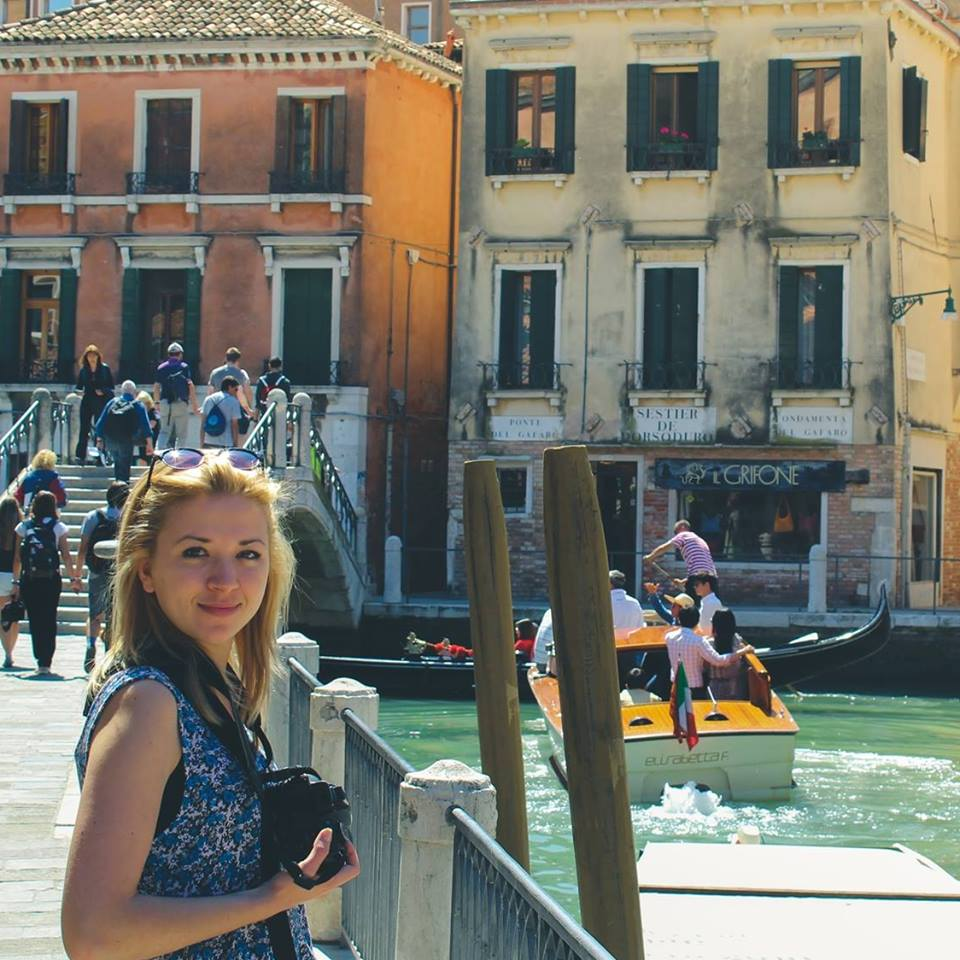

Planovi i projekti

Za sada nema mnogo planova. Neka okvirna slika jeste da se ja posvetim veb dizajnu, a sestra
grafičkom dizajnu, pa da u budućnosti udružimo znanja i snage i prihvatamo se nekih zajedničkih
projekata. Moja sestra, Katarina Stamenković, rođena je 12. decembra 1993. godine. Diplomirala je na
fakultetu Likovnih umetnosti u Beogradu 2017. na odseku za grafiku. Odmah nakon toga upisala je master i naredne
godine završila kao najbolja u klasi. Od tada više je posvećena slikanju i izradi ikona, s obzirom
na to da su za dobre grafike potrebne prese koje joj više nisu na raspolaganju. Ova stranica posvećena je
njenim radovima koji su se našli u njenom portfoliu kao deo master rada, a rađeni su tehnikama
digitalne grafike i litografije.
Galerija